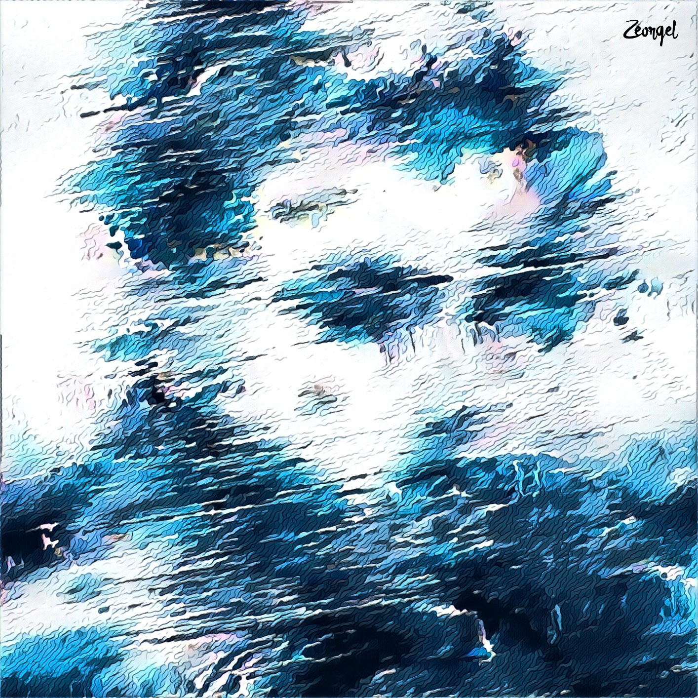

THE GUY
Once on a Sunny day, flew by plane over the deep blue sea in a far distant sight. Staring this was a guy with a rugged face, and weak physique, standing over the raft.
Soon his stomach starts growling like a newborn. He picks his stake, which he earlier broke from the raft and peeped into water. To his surprise, he finds a dolphin and it's baby approaching.
He pulls himself out of the water and is provided with two options of a giant dolphin, which he can't manage, and a baby dolphin passing along.
No time to think as they're close.
Taking a deep breath, He snatched the baby dolphin out of the waters and threw it onto the raft.
He holds it against raft with one hand and the stake on the other. As he raises the stake to sky-high, aiming the little dolphin, it whistles in fear.
He can't do it.
He picks it up and releases it into the water. Both the dolphins swim away. The Guy gets drowsy and falls over the board. Day passes, and night slides in. All the chill winds won't let him sleep.
Night passes. Sunrises. Hunger grows and grows. This goes in a loop for many more days to come.
Once there is a sharp pain in his gut. It felt as if there was a Blackhole in. He can't bear it anymore. At that moment, he took the stake and placed his hand over the raft. With eyes closed, he strikes it(stake) over his hand.
Two of his fingers split out of his hand along with a spring of blood. With so much pain, as he held his fingers in hand, blood spilled all over the raft and into the ocean body. Removing the nails, he eats them.
Soon he sees a few Sharks surrounding him lured by his blood. He, with a weak limb, held the stake upright and head firm. As soon as a shark attacked him; he struck it like a thunderbolt. Shark dies. He could get a chunk of it.
He defends himself from the others till they flee out of his sight. It's almost sunset. He lying backbiting his Sharkie-chunk, sees dark clouds enter the frame as if they were whispering to among themselves.
Soon it gets dark and all gloomy. The rain suddenly pours in. The Guy swiftly removes his shaggy shirt, places it over his widespread arms, and stands erect. Then, he clusters and sucks from it.
While this is going on, he notices that his raft is speeding up. Sees a Whirlpool whirling. Hurriedly he stretches his shirt, and lying over the raft, he ties himself to it. He holds it tight before being swirled into the Whirlpool.
Bubbling out the air, he closes off his eyes.
"Hello, can you hear me?" speaks a Woman.
With a blurred vision as focused light flashes on his face, THE GUY finds himself on a chair with weird wires attached, making weird noises in an empty dark room.
As the Woman repeats herself, he murmurs in a low voice, "Where am I? What happened to me?"
She says,
"Nothing to worry. You were tested in our Simulator for endurance and you've passed in it".
With a smile on her face she says, "You are in our HeadQuarters, Mr.Harihar.
And WELCOME to SIB (Secrective Intelligence Bureau)."
The Beginning is yet to begin..